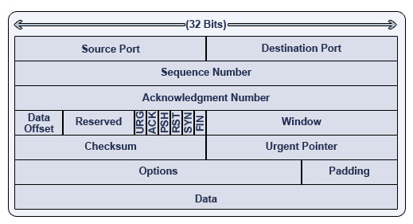
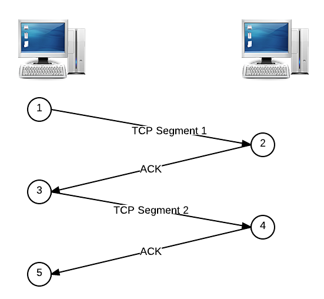
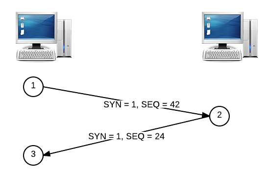
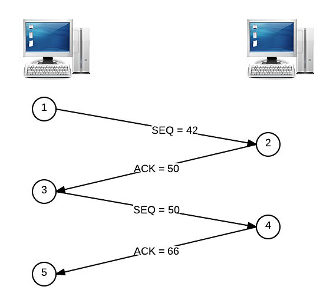
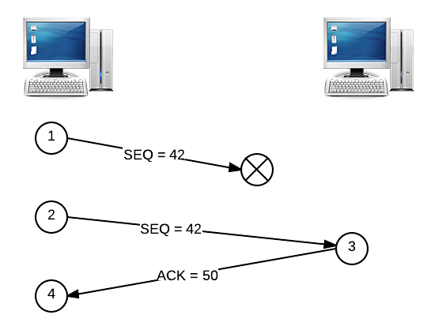
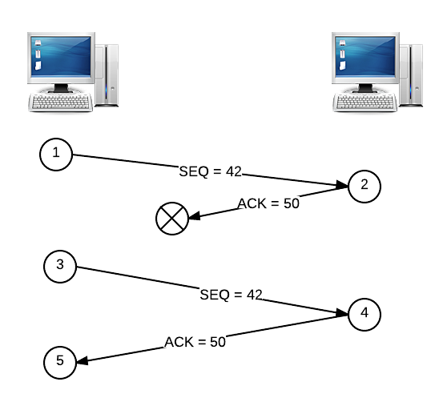
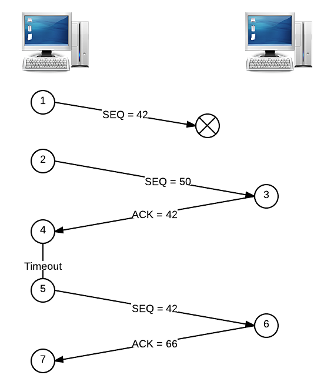
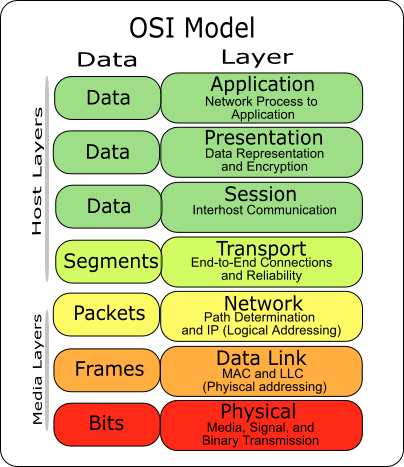

Chapter 11 Manual Transmission
In our discussions of networking, DNS, HTTP, and email so far, we've used words like "request" and "response" to describe something that travels through the Internet. That something could be the CNN home page, a query for the IP address of reddit.com, or the third email in my inbox. However, we've kinda taken for granted that a request knows where it came from and knows where it's going, as well as exactly what information goes into a request. In our final foray into the study of the Internet, let's peel back this last final layer and take a look at exactly what's being sent from router to router on the information superhighway.
TCP Fundamentals
The delivery of information across the Internet is handled by—you guessed it—more protocols! This time, we'll be looking at a suite of protocols called TCP/IP; yep, for something as important as sending information through the net, we'll need more than just one protocol! First, let's discuss TCP, or Transmission Control Protocol. When an application like Google Chrome wants to send information (like an HTTP request) to another machine on a network, it can use TCP to handle sending messages back and forth with another computer. TCP is connection-oriented, which means that two machines communicating using TCP will first establish a connection with each other by sending a greeting back and forth, and then they'll send messages over that connection. With TCP, only the two ends of the communication, in our case the client and the server, need to worry about remembering anything related to the connection. The rest of the devices on the network, like the routers connecting the client and server, are stateless, which means they never need to store any data relating to the TCP connection.
TCP transmits messages by breaking them up into smaller units called segments. So, if a web server needs to send a client a large HTTP response, TCP will handle the task of breaking that large message into smaller, more manageable chunks. Each of these segments looks like this:

So, a TCP segment keeps track of the source and destination port and some options in addition to the body, or payload, of the message, which is pictured at the bottom. Looks like TCP segments aren't concerned with IP addresses at all, so that much must be handled by IP (whatever that is).
When we send a request to a web page, we want to make sure that the server's response adheres to something called reliable data transfer. Not only do we expect all of the segments transferred from the server to make it all the way to the client, but we also want to make sure they're transferred in order. So, if we head to CNN.com, we don't expect the page to be missing any pictures or for the words on the page to appear out of order! TCP is designed with exactly this in mind. If the network loses parts of the message or delivers them out of order (which actually is exactly what will happen much of the time), then TCP will take care of ensuring everything gets through the way it was meant to be seen, so other protocols like HTTP don't need to worry about re-ordering segments so web pages display correctly. The Internet is a pretty big place, and not every message that's sent across the web actually reaches its destination!
Sending a TCP Segment
Let's take a look at the process of sending a message over TCP. As you can see in the diagram above, each TCP segment has a field called a sequence number, which allows TCP segments to have an ordering associated with them. If a server wants to send a message that's 5,000 bytes long and the maximum size of a TCP segment is 1,000 bytes (though that exact number varies), then five TCP segments will be created, where the first 1,000 bytes could have a sequence number of 0, the second 1,000 bytes could have a sequence number of 1,000, the third 1,000 bytes could have a sequence number of 2,000, and so on. So, even if the client receives these segments out of order, then TCP can use the segments' sequence numbers to reconstruct the original message.
Looks like sequence numbers handle the issue of segments being delivered out of order, but what about ensuring that all TCP segments successfully reach their destination? To solve this problem, we'll have the receiver send acknowledgments, or ACKs for short, that let the sender know that each segment has been received. So, once a sender receives an ACK from the receiver, it knows that a segment has been successfully transmitted! If an ACK is not received, on the other hand, then the sender can't be sure that the receiver has indeed received the segment, so it may need to send that same segment again.
Each time a segment is sent over TCP, the sender expects to receive an ACK from the receiver. So, the sender will start a timer when it sends along a segment to the receiver and estimate about how long it should take for the receiver to receive the message and send an ACK. If the sender doesn't receive an ACK in the estimated amount of time, called a timeout, then the sender will assume that the message was lost and re-send the segment with a re-calculated estimate. For example, the sender might want to double its timeout in order to give the receiver more time. On the other hand, if the receiver is sending ACKs much faster than the sender originally anticipated, then it might want to decrease the window in order to send segments more quickly. So, TCP is constantly adjusting a sliding window, which can help prevent network congestion by ensuring that too many segments aren't sent at once, which could overwhlem the network.
Below is a basic example of sending a message using TCP. The sender's message has been broken up into two TCP segments, and the receiver must acknowledge when it has received each segment.

TCP Handshake
Let's come back to that idea of sequence numbers. The first messages exchanged in a TCP connection, as we mentioned earlier, are special. When a client seeks to establish a TCP connection with a server, it will send a TCP segment with a special bit called the SYN, or synchronize field. The client will also pick a sequence number at random (for security reasons) and associate it with this segment. Let's say that the client picks 42 as the sequence number for the SYN segment. The server's ACK to a SYN segment is called a SYNACK, and the server similarly picks a sequence number to start off with (let's say 24). This process is called a handshake and looks something like this:

Now that sequence numbers have been set up by the handshake, they can be used in combination with ACKs to make sure all segments are delivered to the receiver. Associated with each ACK segment is also a number that represents which packets have been received so far. Let's say that an 8-byte segment is sent with a sequence number of 42. When this segment is received, the receiver will respond with an ACK numbered 50, which is simply 42 + 8 (aka the sequence number + the size of the segment). When the sender receives this ACK, it knows that the next segment to be sent should have a sequence number of 50, which makes sense because the receiver has acknowledged the first 8 bytes of the message. If this segment is 16 bytes this time, the receiver will reply with an ACK numbered 66, which tells the sender that the next segment should start with a sequence number of 66. This process looks something like this:

Dropped Segments
Now, what happens if some segments are never delivered? Suppose instead that the segment with the sequence number of 42 gets lost in the Internet abyss, so the receiver never has a chance to receive it. This means that no ACK will be sent. So, after fruitlessly waiting some amount of time and never receiving an ACK, the sender will go ahead and re-send that segment:

Okay, but what if it's the ACK that gets dropped, and not the original segment? If this happens, then we have essentially the same scenario as above, in which the segment must be re-sent:

In both of these examples, we assumed that the sender would only try to send one segment at a time, waiting for an ACK before moving on. However, this isn't really a very efficient way of sending a message over a connection. We saw earlier how parallelism can be used to more efficiently solve a problem, so let's apply the same principle here. Instead of sending segments in serial, let's send a couple segments in parallel. Now, we'll be looking for a pair of ACKs, not just one ACK. But, since either of these segments and either of these ACKs could end up being dropped by the network, we need some way of figuring out exactly what happened, so we don't needlessly re-transmit segments!
So, the receiver will need to send an ACK that represents the total amount of data it has received in order. Let's say that we send two segments at the same time: one has a sequence number of 42 (and is 8 bytes), and the other has a sequence number of 50 (and is 16 bytes). If only the second segment is delivered, then the receiver will reply with an ACK numbered 42, not 66. When the sender gets this ACK, it knows that the segment numbered 42 hasn't been received yet, and it has no idea what happened to the segment numbered 50. But, it doesn't really care about that second segment yet, since it's important that all segments are received, so it will go ahead and re-send the segment numbered 42. Now, the receiver can reply with an ACK of 66, since the segment with sequence number 50 has already been received! This might come as a pleasant surprise to the sender, since it had no idea whether or not segment 50 was delivered successfully. I like pictures, so here's what that could look like visually:

IP Fundamentals
That's how TCP works, so let's now take a look at the other half of TCP/IP: IP! After all, TCP is still at a higher level than IP, since we haven't yet talked about where routers actually come into play in the process of sending information through a network. IP stands for Internet Protocol, and we've actually already seen some of the important features of IP. We know that each device on a network has an associated IP address, which is a unique number on the network. When a computer wants to send a message to another device, it uses its IP address to identify it. However, if two computers aren't directly connected on the network, then this message will have to travel through one or more routers in order to eventually reach its destination. As we saw before, not every router on a network knows where every other device is. Instead, each router has a routing table that describes where the best place to send the message next would be so that it can reach its destination as quickly as possible. Now that we know how TCP works, we can think about these "messages" as TCP segments.
While TCP is concerned with segments, IP is instead concerned with datagrams, or packets. An IP packet, which is indeed similar to a TCP segment, looks like this:

Aha! There's the IP address. Notice that each IP packet has both a source IP address and a destination IP address, which means that every packet that travels through the Internet using IP knows where it's going and where it came from. Notice also that IP doesn't care about ports at all, since we saw that those are already handled by TCP.
A lot of our discussion of TCP focused on dealing with the fact that sometimes segments won't reach their destinations. This is actually due to IP. While TCP ensures reliable data transfer, IP essentially gives us the opposite: best-effort delivery. Best-effort delivery says that a network will try its very hardest to deliver a message, but it doesn't actually offer any guarantees that the message will reach its destination. The US Post Office, for example, operates using best-effort principles; you are not explicitly informed when your letter reaches its destination, and if the Post Office is overwhelmed with other letters, then the delivery of your letter could be delayed. Similarly, while we said that TCP was a connection-oriented protocol, IP, on the other hand, is connectionless. So, IP may deliver packets out of order, and packets may also be corrupted along the way. That's what it's so important for TCP to handle all of these errors!
Network Masks
IP also allows us to subdivide networks into different groups to keep them more organized and more secure. For example, we might want to group together all of the computers that are connected to a particular router into a subnetwork that is part of a larger network. It turns out that the IP addresses we've been looking at this whole time actually have some additional information encoded in them. The first part of an IP address is called the network prefix, and the second part of an IP address is called the host number. So, the first 24 bits of an IP address might be used for the network prefix, and the last 8 bits might be used for the host number. All computers on the same subnetwork will have the same network prefix, but each individual computer will have a different host number. Associated with each network is a number called the subnet mask, which is used to divide the separate a single IP address on the network into a network prefix and a host number.
Let's look at an example. When determining an IP address's network prefix and host number given a subnet mask, it will actually be easier to think about IP addresses in binary. Didn't think that would ever come back again, did you? Let's say we have the IP address 192.168.56.50 on a network with a mask of 255.255.255.0. If we just convert the numbers between the dots into binary, we have an IP address of 11000000.10101000.00111000.00110010 and a mask of 11111111.11111111.11111111.00000000. Not too bad, right? To figure out the network prefix and the host number, let's apply a binary AND operation to the IP address and the subnet mask. Remember, this just means that we'll get a 1 if we AND together two 1s, and we'll get a 0 otherwise. So, we have:
11000000.10101000.00111000.00110010
& 11111111.11111111.11111111.00000000
-------------------------------------
11000000.10101000.00111000.00000000
The result of this AND operation is the network prefix, which in this case, is 192.168.56.0. That must mean that the rest of the IP address is the host number, which in this case is 0.0.0.50. So, it looks like the first 24 bits of the IP address are used to determine the network, and then the last 8 bits are used to determine a computer on that network.
In that example, everything worked out nicely because the network prefix and host number were separated by a dot. Let's try a different subnet mask, but this time, let's not have a dot separate the 0s and the 1s in the subnet mask. Let's use the same IP address, 192.168.56.50, but this time, let's use a mask of 255.255.255.224. In binary, this is 11111111.11111111.11111111.11100000. Let's do the same thing we did last time:
11000000.10101000.00111000.00110010
& 11111111.11111111.11111111.11100000
-------------------------------------
11000000.10101000.00111000.00100000
Okay, looks like we got a different number for the network prefix this time. Converting from binary to decimal, we get a network prefix of 192.168.56.32, which means we must have a host number of 00010010, or 18. This makes sense, though, since 32 + 18 = 50, which is the last quad in our IP address. So, using this subnet mask, we can create a network where all computers have the same network prefix, but the network prefix and host number don't necessarily have to be separated by one of the dots in an IP address.
It's not really obvious from a subnet mask how many bits are used for the network prefix and how many bits are used for the host number, since we need to convert the mask to binary in order to figure that out. We could just memorize them all or just get really good at math, but that seems to me like a waste of brain cells. Instead of telling people about the mask that's associated with our network, we can instead use something called CIDR notation. CIDR notation is a bit more straightforward, since it just tells us how many bits of the IP address are used for the network prefix and how many bits are used for the host number. For example, the IP address 192.168.56.50 on a network with a mask of 255.255.255.0 would be written as 192.168.56.50/24 in CIDR notation, where the /24 simply says that 24 bits are used for the network prefix. From our second example, the mask 255.255.255.224 would correspond to /27 in CIDR notation, since we're using 27 bits for the network prefix.
Subnetworks
Now, we can use this idea to create subnetworks. We can essentially "borrow" some bits from the host number to divide IP addresses even further. So, rather than separate the IP address into two components, one that identifies the network and one that identifies the host, let's divide it into three parts: one for the network, one for the subnetwork, and one for the host. With a netmask of /27, we can create 8 different /24 subnets, since we can "borrow" three bits from the host number to create a subnet identifier. So, an IP address where those three bits are 111 will be on a different subnetwork than an IP address where those three bits are 101. But, because we said that each of these subnetworks is /24, we know that the first 24 bits of all IP addresses must still be the same. If we instead used a netmask of /28, then we could create 16 different /24 subnets, since we'd be using 4 bits (borrowed from the host number) to identify the subnet rather than 3 bits.
When we choose a subnet mask for a network, we're also making a decision about the number of computers that can be on each subnetwork. For example, a subnet mask of 255.255.255.0, as we've seen, means that we have 8 bits we can use for the host number. Back when we discussed binary, we saw that the largest number we can represent with 8 bits is 28 = 255, so that's how many different devices we can have on a subnetwork. On the other hand, if we choose a subnet mask of 255.255.255.224, then we only get 5 bits for the host number, we means we can only have 32 devices on a subnetwork. So, we have a bit of a tradeoff: while we saw that a larger netmask will allow us to create more subnets, it also limits the number of devices that can be on any given subnet. This limitation is due to the fact that all IP addresses are the same size, so we only have so many bits to work with!
UDP
Many protocols on the Internet, most notably HTTP, use TCP/IP to send messages to other devices, but TCP isn't the only way to send data across the net. UDP, or User Datagram Protocol, is commonly used by video chat applications, which could include Skype or FaceTime. Unlike TCP, UDP does not guarantee that datagrams will actually be received by the client (which makes it a bit more similar to IP in that sense). However, in the case of video chat, for example, there are so many packets being sent in order to transfer your beautiful face to your friend's computer, that losing one of them doesn't really make a difference at all. So, applications that are sending a whole lot of data over the network, such that nobody will really notice (or care) if tiny portions of it get lost, might want to use UDP instead of TCP, since there's no need for a reliable connection. DNS queries, for example, use UDP for this reason, since it ends up being more efficient if we don't have to take the time to make sure every single transmission was received successfully.
The OSI Model
Alrighty, before we finish up, let's take a moment to step back and review some of the networking terms we've seen so far. The various protocols we've seen can be categorized according to something called the OSI Model:

At the top of this networking pyramid, we have protocols that are used by applications like web browsers and email clients, so these include HTTP, SMTP, POP3, and IMAP. Let's skip over presentation and session and head to the transport layer. Here, we saw how TCP and UDP can transfer data between two computers by establishing a connection. Next, we saw how IP on the network layer handled routing packets through various devices on the network so they can (hopefully!) reach their destination. Even lower than that, we saw that Ethernet is used to actually send data down a wire. Finally, at the end of the day, we're still representing information using good ole' bits, so anything we ever send over a network can be encoded as trusty 0s and 1s.
Practice Problems
When we say that TCP ensures reliable data transfer, what two guarantees are we making about the delivery of segments?
What's an ACK? How do ACKs relate to reliable data transfer?
The below depicts two TCP segments being transmitted from one host to another. Both segments are 32 bytes in size. Fill in the blanks for both ACKs below!
This time, one of the TCP segments got dropped on its way from one host to another. Again, both segments are 32 bytes in size. Fill in the blanks below, where we have one blank for a sequence number, and one blank for an ACK!
What's the difference between reliable data transfer and best-effort delivery?
I have an IP address of 172.16.42.108 on a network with a mask of 255.255.255.192. What is the network prefix of my IP address? How about the host number?
Now, I have an IP address of 12.16.78.94/25. What is the network prefix of my IP address? How about the host number?
With a netmask of 255.255.255.240, how many /24 subnets can I create? How many hosts can be on each subnet?
What's the difference between TCP and UDP? Why might an application want to use TCP instead of UDP? How about UDP instead of TCP?